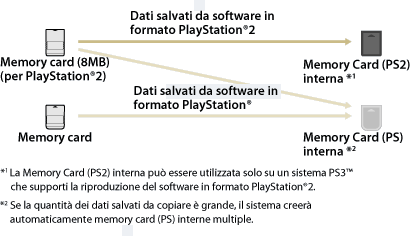

Gioco > Riproduzione di software in formato PlayStation®2 e PlayStation® > Utilizzo di dati salvati su Memory Card
Utilizzo di dati salvati su Memory Card
Per utilizzare i dati salvati su una Memory card (8MB) (per PlayStation®2) o una Memory Card per utilizzare un gioco, è necessario copiare i dati su una Memoria Card interna all'interno del disco rigido. È necessario utilizzare un adattatore per Memory Card (venduto a parte) per copiare i dati.
Avvisi
- Alcuni titoli di software in formato PlayStation®2 o PlayStation® possono essere eseguiti in modo differente sul sistema PS3™ rispetto all'esecuzione sui sistemi PlayStation®2 o PlayStation®, oppure non vengono eseguiti correttamente sul sistema PS3™.
- Inoltre, il software in formato PlayStation®2 non è riproducibile su alcuni sistemi PS3™. Per i dettagli, vedere [Tipi di dischi riproducibili], visitare il sito Web di SCE per la propria zona o rivedere la documentazione inclusa con il sistema PS3™.
1. |
Selezionare |
|---|---|
2. |
Collegare l'adattatore per Memory Card al sistema PS3™ e inserire una Memory Card. |
3. |
Selezionare l'icona dei dati salvati da copiare dalla Memory Card visualizzata, quindi premere il tasto |
4. |
Selezionare [Copia]. |
5. |
Assegna ingressi |
 (Gioco) >
(Gioco) >  (Utilità della Memory Card (PS / PS2)).
(Utilità della Memory Card (PS / PS2)). (Memory Card (PS)) o
(Memory Card (PS)) o  (Memory Card (PS2)).
(Memory Card (PS2)). (Crea nuova Memory Card interna) e attenersi alle istruzioni a video per creare una scheda di memoria interna.
(Crea nuova Memory Card interna) e attenersi alle istruzioni a video per creare una scheda di memoria interna.Note
- In base al tipo di dati, i dati salvati da una Memory card (8MB) (per PlayStation®2) o una Memory Card vengono copiati su una Memory Card interna come mostrato sotto.
- Per alcuni dati salvati, l'operazione di copia potrebbe richiedere vari minuti.
- Per copiare tutti i dati salvati su una Memory Card (8MB) (per PlayStation®2) o su una Memory Card, selezionare la Memory Card nel punto 3, premere il tasto
 e selezionare [Copia] dal menu delle opzioni.
e selezionare [Copia] dal menu delle opzioni. - Per alcuni dati salvati la copia potrebbe non essere consentita. Durante l'uso di tali dati su un sistema PS3™, selezionare [Sposta] nel punto 4. I dati salvati vengono trasferiti sul disco rigido ed eliminati dalla Memory Card.
- In seguito è possibile spostare i dati salvati di nuovo sulla Memory Card.

Copia di dati salvati su una Memory Card
Copiare i dati del software in formato PlayStation®2 o PlayStation® salvati sul disco rigido, trasferendoli su una Memory Card o su una Memory Card (8MB) (per PlayStation®2). È necessario utilizzare un adattatore per Memory Card (venduto separatamente) per la copia dei dati.
1. |
Selezionare |
|---|---|
2. |
Collegare l'adattatore per Memory Card al sistema PS3™ e inserire una Memory Card. |
3. |
Selezionare l'icona dei dati salvati da copiare da |
4. |
Selezionare [Copia]. |
 (Memory Card interna (PS)) o
(Memory Card interna (PS)) o  (Memory Card interna (PS2)) in cui sono salvati i dati, quindi premere il tasto
(Memory Card interna (PS2)) in cui sono salvati i dati, quindi premere il tasto Note
- Non è possibile copiare contemporaneamente più elementi salvati in una Memory Card interna su una Memory Card.
- Per alcuni dati salvati la copia potrebbe non essere consentita. Durante l'uso di tali dati su un sistema PS3™, selezionare [Sposta] nel punto 4. I dati salvati vengono trasferiti sul disco rigido ed eliminati dalla Memory Card interna.
- In seguito è possibile spostare i dati salvati di nuovo sulla Memory Card.